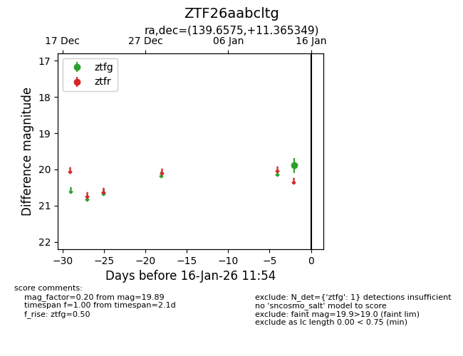
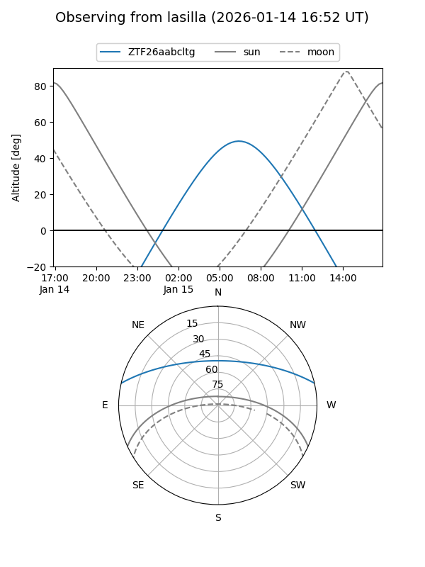
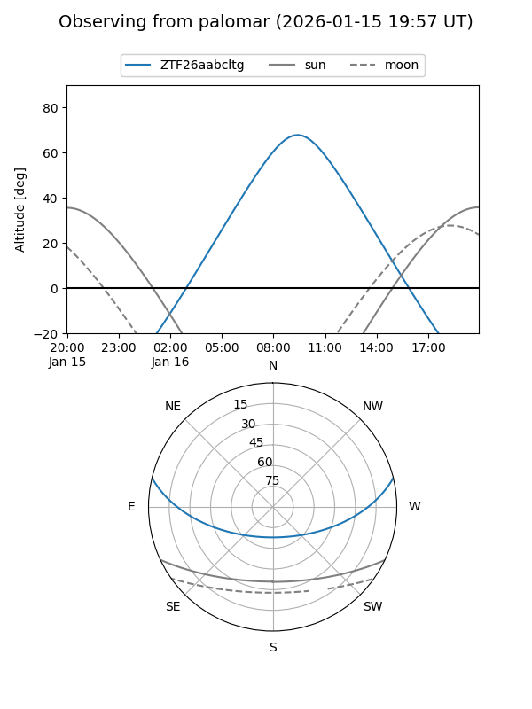

ZTF26aabcltg
Target ZTF26aabcltg at 2026-01-16 11:55
Aliases and brokers:
FINK: link
Lasair: link
ALeRCE: link
alt names
ZTF26aabcltg (ztf,fink_ztf)
Coordinates:
equatorial (ra, dec) = 139.6575,+11.36535
equatorial (HMS+DMS) = 09:18:37.80,+11:21:55.26
galactic (l, b) = (219.6441,+37.77075)
Flags:
Photometry:
last ztfg=19.89
1 ztfg detections
Lightcurve

Visibility


Additional plots